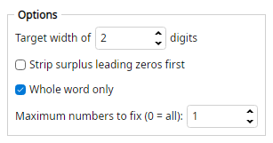

Finds runs of digits and rewrites them so their length matches the target width by adjusting leading zeros. Longer numbers stay unchanged unless surplus zeros are stripped.
Number of digits = 4
track9 >>> track0009
Number of digits = 3
doc1_12 >>> doc1_012
Number of digits = 3; strip surplus leading zeros
x0007 >>> x007